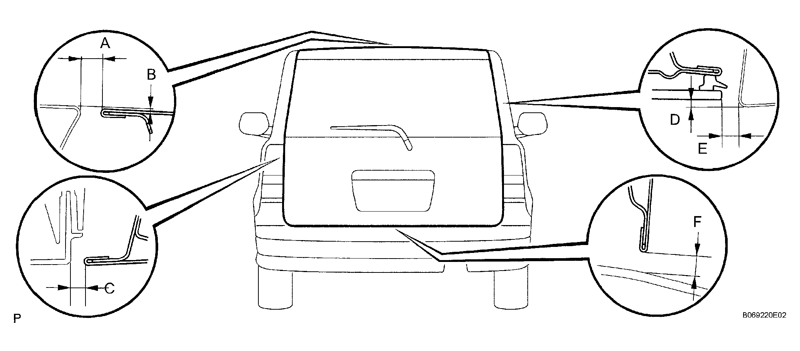

On-Vehicle Inspection
- INSPECT BACK DOOR PANEL SUB-ASSEMBLY
- Check that the clearance measurements of areas A to F are within the standard range.

Courtesy of © TOYOTA, LICENSE AGREEMENT TMS1002Standard measurement
STANDARD MEASUREMENTArea Specified Condition A 7.5 +- 1.5 mm (0.300 +- 0.059 in.) B 1.0 +- 1.5 mm (0.040 +- 0.059 in.) C 5.5 +- 1.5 mm (0.228 +- 0.059 in.) D 2.7 +- 1.5 mm (0.106 +- 0.059 in.) E 6.0 +- 1.5 mm (0.236 +- 0.059 in.) F 7.2 +- 1.5 mm (0.283 +- 0.059 in.)
- Check that the clearance measurements of areas A to F are within the standard range.